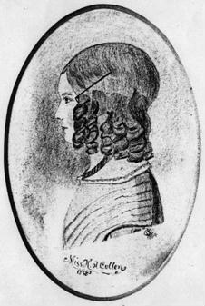
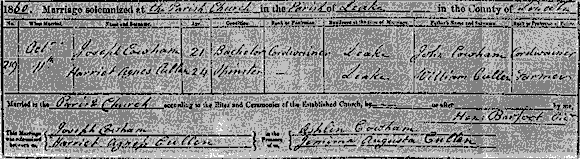

| Follow the above link to the main page for this topic or click the graphic below to visit the Homepage. |
 | Photo Gallery: Descendants of William & Elizabeth (Houghton) Cullen of Great Hale, Lincolnshire, England courtesy of the Ingham Family, UK |
 |
The caption reads: "Miss H.A. Cullen 1848". Harriet Agnes Cullen, daughter of William & Elizabeth (Houghton) Cullen, was born in Gosberton, Lincolnshire in 1836. This pencil sketch, evidently from a previous photo, was drawn on a postcard in 1894 and portrays Harriet at age 10. Harriet would later marry Joseph Cowham and bear him a daughter, Annie Cowham, pictured below. Harriet was one sister of Enos Cullen and Seth Cullen, two brothers who emigrated to Ohio in the US, in 1840. Back Button to Return. |
| Annie Cowham was born about 1878, the daughter of Joseph & Harriet Agnes (Cullen) Cowham. Joseph, son of John Cowham, was born about 1839 at Leake and was living in Navenby, Lincs., England at the time of the 1881 census. Known brothers and sisters of Annie (all born at Leake, Lincolnshire, England) were: John born 1862, Richard born 1868, and Arthur born 1879. Back Button to Return. |
 |
 An example of a marriage certificate issued in 19'th century England, in this case for the marriage of Harriet Agnes Cullen and Joseph Cowham on Oct 11, 1860 at the Parish Church in Leake, Lincolnshire. The parents of the couple are listed on the form at the upper right (John Cowham & William Cullen). Witnesses are at the bottom right (Ashlin Cowham, brother(?) of Joseph - and Jemima Augusta Cullen, sister of Harriet). |